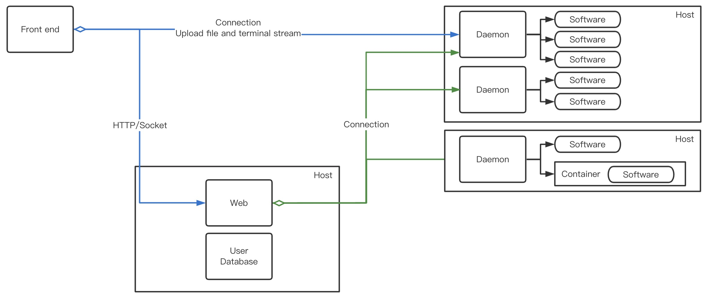
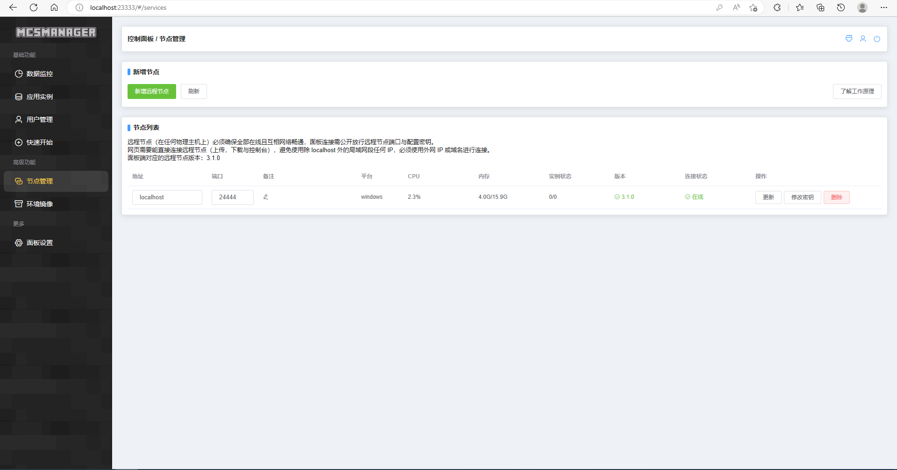

文档目录
前言
常见问题
准备工作
文本编辑器
java环境
浏览器
服务端核心
开始搭建
java命令启动
编写bat
如何加入服务器
根目录文件解释
MCSManager
下载MCSM
守护进程
映射面板
插件
yml文件
基础-EssentialsX
下载和安装
warp
kits
其他
世界-Multiverse-Core
权限-LuckPerms
聊天-TrChat
显示-TAB SkinsRestorer
提示-CustomJoinandQuitMessage
登陆-AuthMe Reloaded
地皮-PlotSquared
领地-Residence
空岛-A/B SkyBlock
称号-UserPrefix PlayerTitle
管理-ServerUtils CoreProtect
签到-LiteSignIn
其他插件
菜单
反作弊
mod服
插件服
学习用服务端
Published with GitBook
守护进程
守护进程
你可以这样想
MCSM分为两部分，面板端和守护进程，都可以独立运行
开启面板端可以看到浏览器那个面板，但是不能运行服务器！
因为服务器是运行在守护进程的

results matching "
"
No results matching "
"